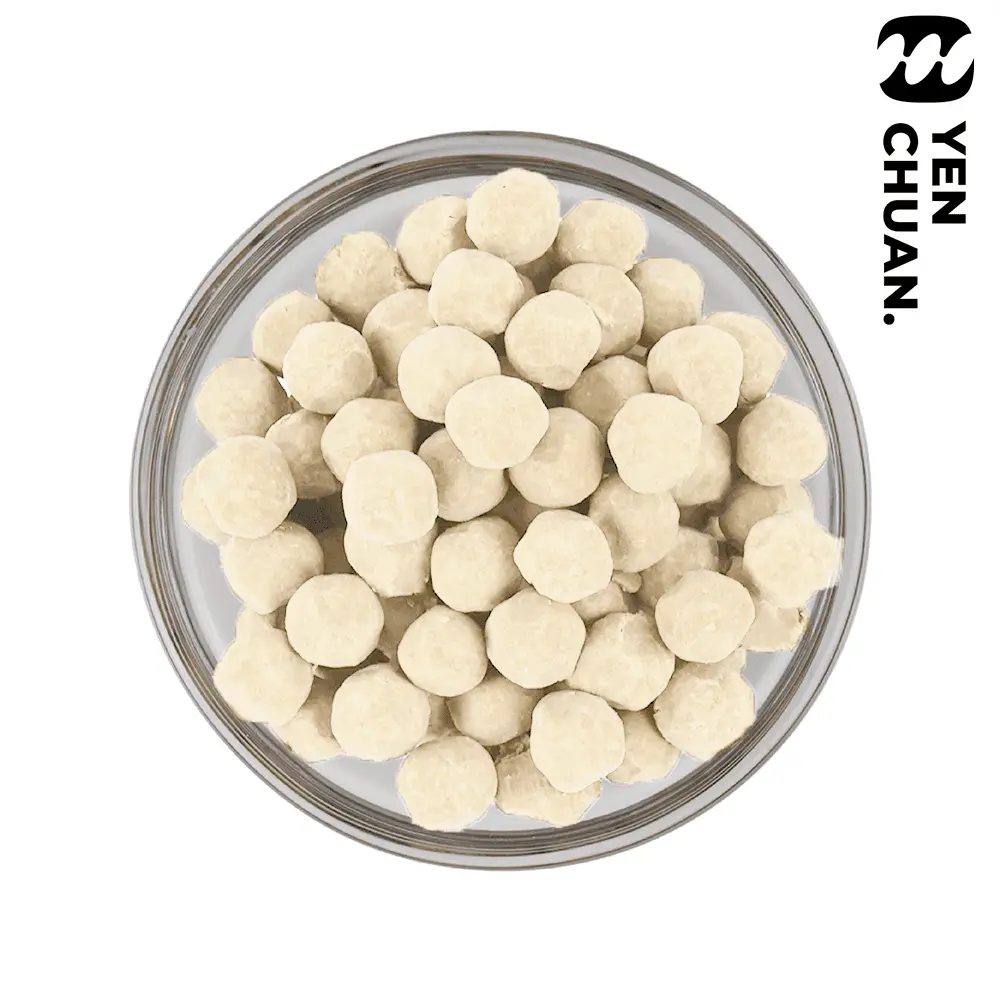

Sizes available: 10mm/8mm/7mm/4mm
Unit size: 3kg
Units per carton: 6
How to cook: Heat in boiling water for 30 minutes, turn off the heat and stew for another 30 minutes with the lid on. Sieve and serve!

You’ve tried black tapioca pearls but have you heard of white tapioca pearls?
With its sparkling white appearance, they look even more like actual pearls!
Wholesale prices depend on volume and destination. Our sales team or AI assistant replies with MOQ, lead time and shipping options.
Sizes available: 10mm/8mm/7mm/4mm
Unit size: 3kg
Units per carton: 6
How to cook: Heat in boiling water for 30 minutes, turn off the heat and stew for another 30 minutes with the lid on. Sieve and serve!